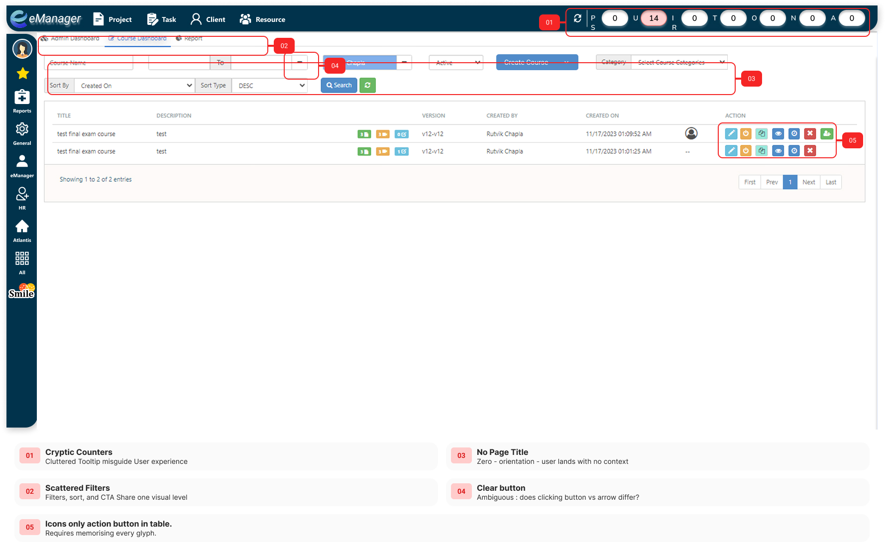
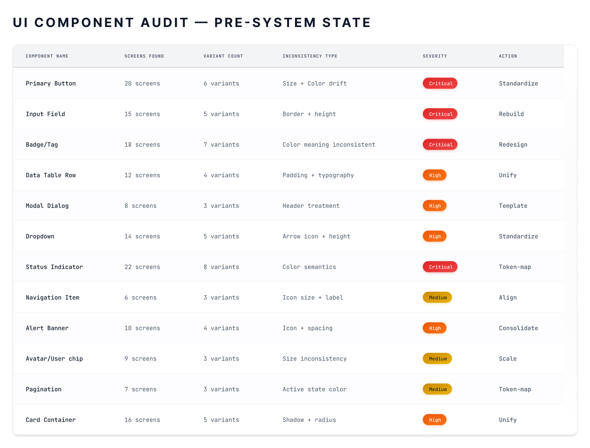
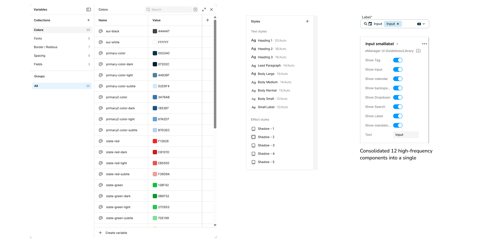
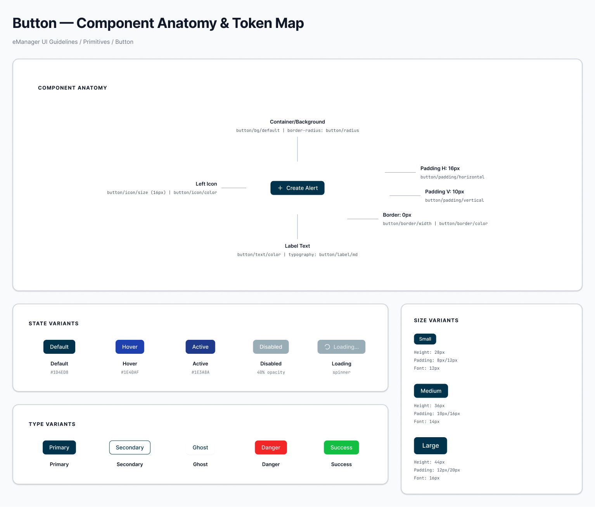

Problem Statement
eManager had grown quickly. As screens multiplied, the UI quietly fractured. Buttons appeared in five different styles with no documented reason. Spacing was approximated sprint-to-sprint. Designers were rebuilding components that already existed somewhere else in the product- just differently.
The cost wasn't aesthetic. Engineers spent time decoding spec variations instead of building. QA flagged inconsistencies that were really design system failures in disguise. New designers onboarded to a different version of the product on every screen they opened.
Why this mattered
The business case was clear: stop the drift, build the library, and make the next feature cheaper to ship than the last one. Without a system, every new screen was a negotiation between designer intent and developer interpretation. That gap had a cost- in rework, in QA time, and in the subtle but real erosion of user trust every time the same action behaved differently on a different screen.
My Role
I led this end-to-end as the sole designer: auditing the existing UI, defining the token architecture, building the component library in Figma, writing usage documentation, and working with engineering to validate every spec.
Constraints I worked within:
- Engineering was mid-sprint- I couldn't rebuild existing screens immediately
- Two legacy colour systems needed to merge, not replace
- No token infrastructure existed before I started
- The system had to be usable by developers who rarely opened Figma
Process
Explore
Before touching a component, I executed a deep heuristic evaluation of the legacy platform and catalogued the existing debt. The UI component audit identified 12 core primitives suffering from severe drift across 20+ screens. The worst offenders included status indicators with 8 different semantic color variations (critical severity) and primary buttons appearing in 6 conflicting styles.
Iterate
I established a robust token architecture using Figma Variables to centralize colors, typography, and spacing. By moving away from hardcoded hex values to semantic variables (e.g., primary-color-dark, state-red-subtle), we established a singular source of truth. Consequently, we were able to ruthlessly consolidate scattered variants—compressing 12 redundant high-frequency inputs into a single, comprehensive master component driven by clear boolean properties.
Implement
Every component was built anatomy-first. I meticulously mapped structural elements (like horizontal padding, border radius, and label typography) strictly to our newly established design tokens. Components shipped with exhaustive variant matrices covering type combinations (Primary, Ghost, Danger), size tiers (Small, Medium, Large), and crucial interaction states (Hover, Active, Disabled, Loading), ensuring rigorous predictability during developer handoff.
Trade-offs & Constraints
- Avoided over-flexible components to keep usage clear.
- Focused on current product needs, not future guesses.
Screenshots & Notes

Phase 1 Evaluation: Identifying systemic friction points like missing page context, chaotic filter hierarchy, and cryptic iconography that relied on user memorization rather than clear affordances.

Quantifying the design debt: A detailed audit revealed severe inconsistencies, including 6 different primary button variants and 8 status indicator styles drifting across 20+ screens.

Establishing the foundation: Centralizing UI guidelines using Figma variables for color tokens and typography, enabling us to consolidate 12 fragmented high-frequency elements into a single master input component.

Anatomy-first design: Every primitive was meticulously mapped to corresponding design tokens, covering all logical state, size, and type variants to ensure predictable developer handoff.

The system in action: A newly designed NOC dashboard leveraging the centralized component library, demonstrating a clean, scalable, and fully consistent user interface.
Final Solution
The system gave four teams a shared design language for the first time. Design-to-dev handoff time for new screens dropped from approximately 3 days to under 1 day. New designer onboarding reduced from a 2-week orientation to a 3-day structured walkthrough. The system is actively maintained- which is the only design system that actually works.
Impact & Learnings
Impact
- 80+ components shipped across 4 product teams
- Design-to-dev handoff time: ~3 days → ~1 day per feature (confirmed in sprint retrospectives with 2 engineers)
- ~30% reduction in design-related QA bugs in first 3 months post-launch
- New screens built 2–3× faster using existing components
- Designer onboarding: 2 weeks → 3 days using system documentation
Learnings
- A design system should solve real product problems, not look perfect.
- Fewer options often lead to better usability.
- Early developer involvement saves time later.
- Consistency builds user trust more than visual polish.
Involving engineers in naming semantic tokens from day one would have eliminated the translation friction at handoff. That's a process change I apply to every system project now.